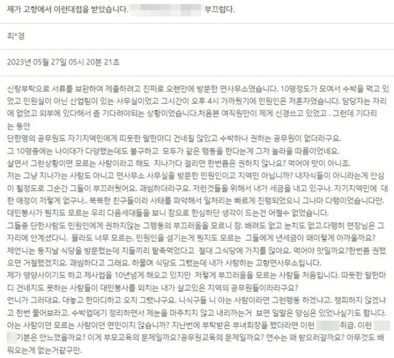
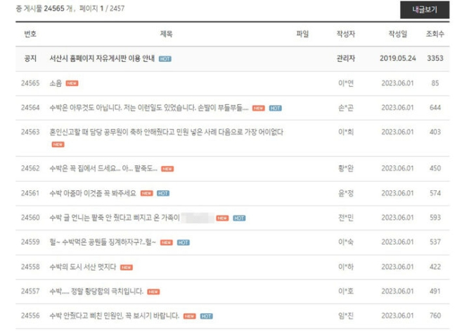

"수박 먹고 있던 공무원들, (나한테) 수박 하나 권하는 사람이 없더라"
최근 충남 서산의 한 면사무소를 찾은 시민이 공무원들끼리 수박을 먹을 뿐 자신에게는 권하지도 않았다면서 서산시청 홈페이지에 민원을 제기해 논란입니다.
서산시청 홈페이지에는 해당 민원을 비판하는 글과 함께 최초 민원인의 반박이 잇따르며 설전이 벌어졌습니다.
지난 27일 서산시청 홈페이지에는 '제가 고향에서 이런 대접을 받았습니다'라는 제목의 글이 올라왔습니다.
작성자 A 씨는 "오랜만에 방문한 면사무소였다. (공무원들) 10명 정도가 모여서 수박을 먹고 있었고 민원인은 나 혼자였다"라고 운을 뗐습니다.
이어 "단 한 명의 공무원도 따뜻한 말 한마디 건네지를 않았고 수박 하나 권하는 공무원이 없었다"면서 "내 자식들이 아니라는 게 안심이 될 정도로 그들이 부끄럽고 괘씸했다. 저런 것들을 위해 내가 세금을 내고 있구나"라고 말했습니다.
A 씨는 "똑똑한 친구들이라 사태를 파악해서 일 처리는 빠르게 진행됐으니 다행"이라면서도 "민원인을 섬기는 게 뭔지도 모르는 그들에게 낸 세금이 왜 이렇게 아까울까"라고 덧붙였습니다.
그러면서 "이게 부모 교육의 문제일까요? 공무원 교육의 문제일까요? 연수는 왜 받으러 갈까요? 아무것도 배워오는 게 없는 것 같구만"이라면서 글을 끝냈습니다.
해당 글은 오늘(1일) 오후 기준 1만여 회의 조회수를 기록하며 인터넷상에서 큰 화제가 됐습니다
곧 A 씨의 글에는 반박 답글이 달렸습니다.
한 시민은 "공무원들이 홀대한 것도 아니고 수박을 민원인한테 안 권했다고 부모 욕까지 하는 게 맞는지 모르겠다"고 했고, 또 다른 시민은 "다음 방문 때는 공무원들 먹을 수박 한 통 사다 드려라. 정말 보기 불편한 민원이다"라며 비판했습니다.
이에 A 씨는 "수박 못 먹어서 미친X 됐다. 내가 말하는 요지를 잘 모르는 것 같다"며 "민원인은 나 혼자였는데 그런 대접이 가능하냐"며 반박했습니다.
A 씨가 쏘아 올린 '수박 사태'는 글이 게시되고 5일이 지난 오늘까지도 많은 누리꾼들의 의견이 서산시청 홈페이지 게시판을 도배하고 있습니다.
사연을 접한 대부분의 누리꾼들은 "공무원분들 수박 더 드시고 힘내시라"며 응원의 댓글을 남기는 한편, 일부 누리꾼들은 "수박 한 조각이라도 건네며 말 거는 게 힘든 건가"라며 A 씨를 옹호하는 의견도 다소 보였습니다.